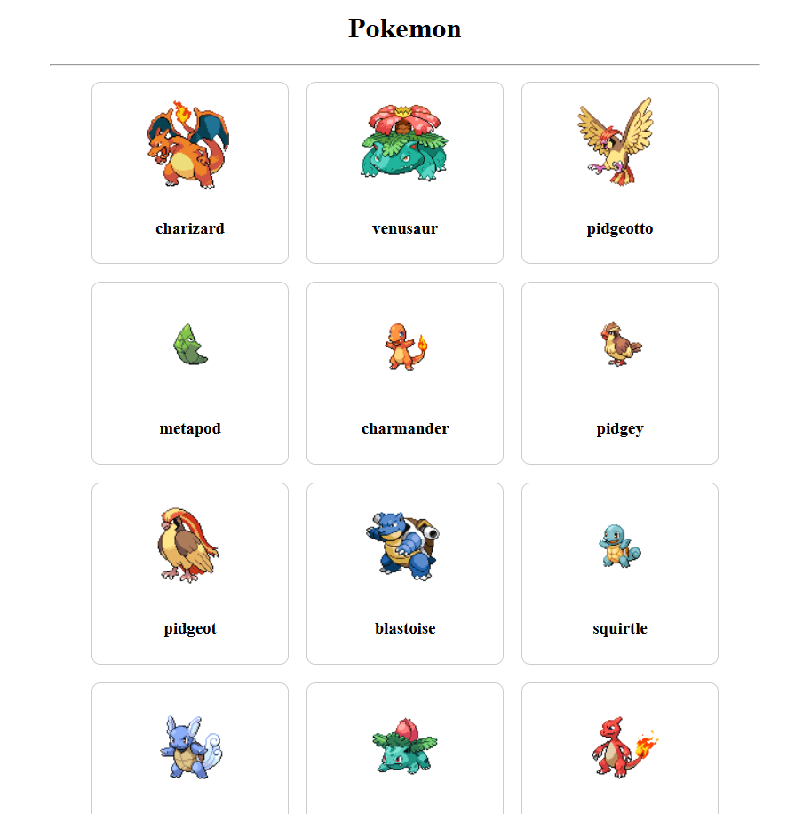
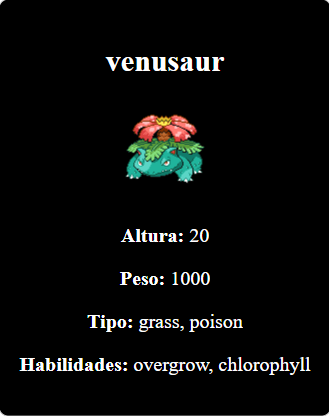

Projeto: Pokémon API
O Pokémon API Explorer foi desenvolvido para fornecer informações detalhadas sobre o universo Pokémon, utilizando uma API pública que permite buscar dados de forma dinâmica e intuitiva. O site é ideal para fãs e desenvolvedores que desejam explorar informações completas sobre os Pokémons.
Tecnologias Utilizadas
- HTML5
- CSS3
- JavaScript (fetch API)
- PokéAPI
Links do Projeto
Minha Participação(projeto individual)
Fui responsável por integrar a API, exibir as informações na tela e estilizar o layout responsivo.
Capturas de Tela

